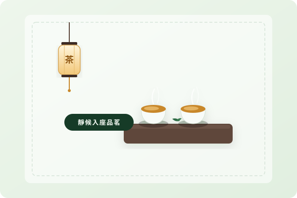

品茗席次預約說明
為維護每位茶友細細品茗的悠閒體驗，茶坊正式對外開放後將採小席預約制。每席皆由專業茶師為您沖泡鹿谷得獎中焙烏龍，讓您深度感受傳統焙火茶湯的七道層次變化。
若您對台灣傳統烏龍茶有任何好奇，或想前來茶坊品茗小坐、選購當季茶品，歡迎隨時與我們聯絡。
茶坊實際地址、預約專線與營業時段目前正進行最後籌備確認，待正式營運時將第一時間於本頁更新完整資訊並啟用 Google 地圖導航與預約服務。

為維護每位茶友細細品茗的悠閒體驗，茶坊正式對外開放後將採小席預約制。每席皆由專業茶師為您沖泡鹿谷得獎中焙烏龍，讓您深度感受傳統焙火茶湯的七道層次變化。